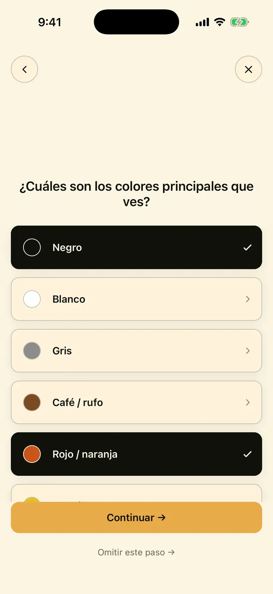
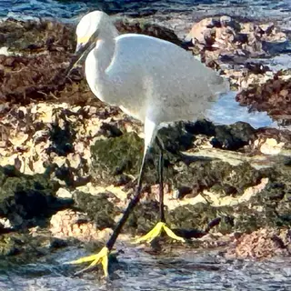
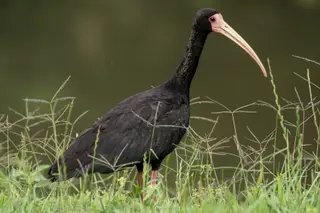
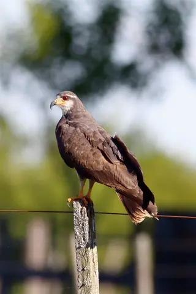

Mariposa Monarca
Danaus plexippus
Tawari te dice quiénes son, y con quién viven.
Una guía de campo viva para la biodiversidad de Colombia. Más que dar nombres. Identifica lo que ves en el sendero, explora parques y reservas protegidas mediante gincanas, lleva tu registro personal y comprende la red ecológica que conecta a cada ser vivo.
Las gincanas
Descubre áreas protegidas en el mapa interactivo y recorre senderos mediante las listas curadas de las gincanas. Una gincana es la lista de quienes viven en un lugar. No es un puntaje y no hace falta terminarla. Aquí, tres de las 25:
 87 especies
87 especies 55 especies
55 especies 80 especies
80 especiesDel Santuario de Los Flamencos, en La Guajira, al Lago La Cocha, en Nariño.
Fotos: Mfrancoavellaneda (CC0, Wikimedia Commons) · Estefani Sandoval (CC BY-SA 4.0, Wikimedia Commons) · David (CC BY 2.0, Wikimedia Commons). Recortadas.
La columna ecológica
La mayoría de las guías se detienen en el nombre. Tawari sitúa a cada organismo dentro de su ecosistema vivo a través de tres relaciones ecológicas esenciales, cuando una fuente revisada las respalda.
Qué come, consume o poliniza para sostenerse en su hábitat.
Qué especies dependen de ella para alimentarse, y cómo regresa su energía al suelo.
El bioma, el huésped o el sustrato donde transcurre su vida en Colombia.
Así se ve en la ficha de la mariposa monarca:


Tres de las siete relaciones de su ficha, de GloBI. Fotos: Juan Carlos Caicedo Hernández y Sebastian Serna Muñoz (CC BY 4.0, iNaturalist, iNaturalist), recortadas. Dibujos: Tawari.
La app
¿No aparece lo que viste? Regístralo igual, con una foto o una descripción, y el equipo intenta identificarlo.

Tu registro personal
Cada avistamiento cuenta una historia en el campo. Tawari organiza tus hallazgos en tu lista personal, lista para consultar cuando estés en el sendero.
Tu foto y notas de campo. Entra a cualquier avistamiento en Mi Lista para agregar tu foto o editar notas sobre el comportamiento o lugar donde lo viste.
Pronto Podrás compartir tus páginas con tu familia y tus amigos.

En la orilla norte, pescando entre las piedras. Patas negras y dedos amarillos.

Buscando comida en el barro con ese pico curvo.

Posado en un poste, mirando el agua.
Sin rellenos
De muchas especies casi no hay nada publicado. Ahí la ficha cuenta solo lo que se sabe y te invita a sumar: con tus avistamientos, o subiéndolos a iNaturalist.
Con nombre y apellido
Cada ficha escrita cita sus fuentes. Preferimos nombrar un pueblo y un lugar antes que hablar de «los indígenas» en general. Y ninguna ficha da recetas ni consejos médicos.
El camino
Tawari empieza en Colombia y crece con su comunidad. Este es el camino hacia adelante.
De dónde salen los datos
Primero las fuentes colombianas, siempre con licencias abiertas y con crédito.
Lista de espera
Te avisamos cuando abramos el acceso. Sin spam, solo una nota cuando importe.
Colabora
¿Eres una institución, club de observación, jardín botánico o universidad y quieres colaborar? ¿O quieres una gincana para tu lugar? Escríbenos a hola@tawari.id.